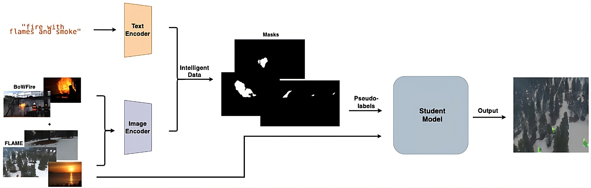
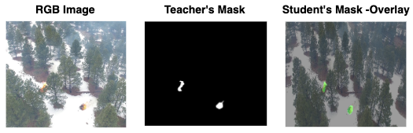

CoDrones
A Knowledge Distillation Framework for Edge-Aware Optimization of Intelligent Data
1 Architecture
An annotation-free, edge-aware teacher–student pipeline. A high-capacity foundation model (teacher) generates pixel-level segmentation masks from unlabeled images using text prompts — no manual labels required. These masks train a lightweight student model that runs entirely on RGB input, deployable on CPU-only edge hardware such as an onboard drone computer.

| Model | Prompt type | Zero-shot | Video |
|---|---|---|---|
| CLIPSeg | Text | Yes | No |
| SAM (original) | Points / boxes / masks | Yes | No |
| Grounded-SAM | Text + boxes / points | Yes | No |
| SAM2 | Multimodal | Yes | Yes |
| SAM3 (used) | Concept-level (text / image) | Yes | Yes |
Student: DeepLabV3 with a MobileNet backbone, trained exclusively on SAM3-generated pseudo-labels for the BoWFire + FLAME fire-segmentation task.
2 Examples
Evaluated on a fire-segmentation case study, combining urban/indoor (BoWFire) and wildfire (FLAME) footage, with zero manual annotations used at any point in training.


3 Video
A short walkthrough of the system running on real footage.